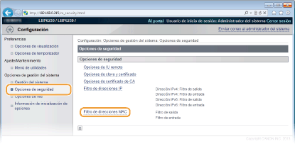
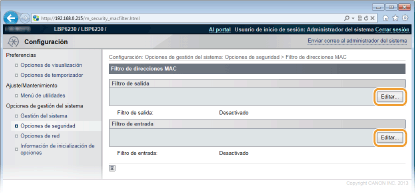
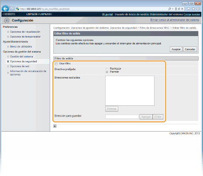
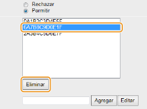

0KXF-02X
Usted puede permitir que se establezca comunicación solamente con aquellos dispositivos que tengan unas direcciones MAC concretas y rechazar la comunicación con otros dispositivos. Asimismo, puede configurar las opciones para rechazar la comunicación con dispositivos que tengan unas direcciones MAC concretas y permitir el resto de comunicaciones. Puede especificar hasta 32 direcciones MAC.
|
|
|
Esta función no puede utilizarse cuando el equipo está conectado a una red inalámbrica.
|
1
Inicie el IU remoto e inicie sesión en modo Administrador del Sistema. Inicio del IU remoto
2
Haga clic en [Configuración].

3
Haga clic en [Opciones de seguridad]  [Filtro de direcciones MAC].
[Filtro de direcciones MAC].

4
Haga clic en [Editar] para especificar un tipo de filtro.

[Filtro de salida]
Restrinja los datos enviados desde el equipo a un ordenador especificando una dirección MAC.
Restrinja los datos enviados desde el equipo a un ordenador especificando una dirección MAC.
[Filtro de entrada]
Restrinja los datos que recibe el equipo desde un ordenador especificando una dirección MAC.
Restrinja los datos que recibe el equipo desde un ordenador especificando una dirección MAC.
5
Especifique la configuración de filtrado.
Conforme a las condiciones de la directiva, seleccione una directiva prefijada para permitir o rechazar la comunicación entre el equipo y otros dispositivos. A continuación, especifique direcciones MAC para las excepciones.

|
1
|
Marque la casilla de verificación [Usar filtro] y, a continuación, marque una directiva con [Directiva prefijada].
[Usar filtro]
Marque la casilla de verificación para restringir la comunicación. Desmarque la casilla de verificación para comunicarse sin restricciones. [Directiva prefijada]
Conforme a las condiciones de la directiva, seleccione si desea permitir o rechazar que otros dispositivos se comuniquen con el equipo.
|
||||
|
2
|
Especifique las direcciones excluidas.
Introduzca una dirección MAC en el cuadro de texto [Dirección para guardar] y haga clic en [Agregar].
No delimite la dirección que introduzca con guiones ni dos puntos.
 Si se selecciona [Rechazar] para un filtro de salida
Los paquetes de difusión y multidifusión de salida no pueden filtrarse.
Para eliminar una dirección MAC establecida
Seleccione la dirección MAC que desea eliminar y, a continuación, haga clic en [Eliminar].
 |
||||
|
3
|
Haga clic en [Aceptar].
|
6
Reinicie el equipo.
Apague el equipo, espere al menos 10 segundos y vuelva a encenderlo.